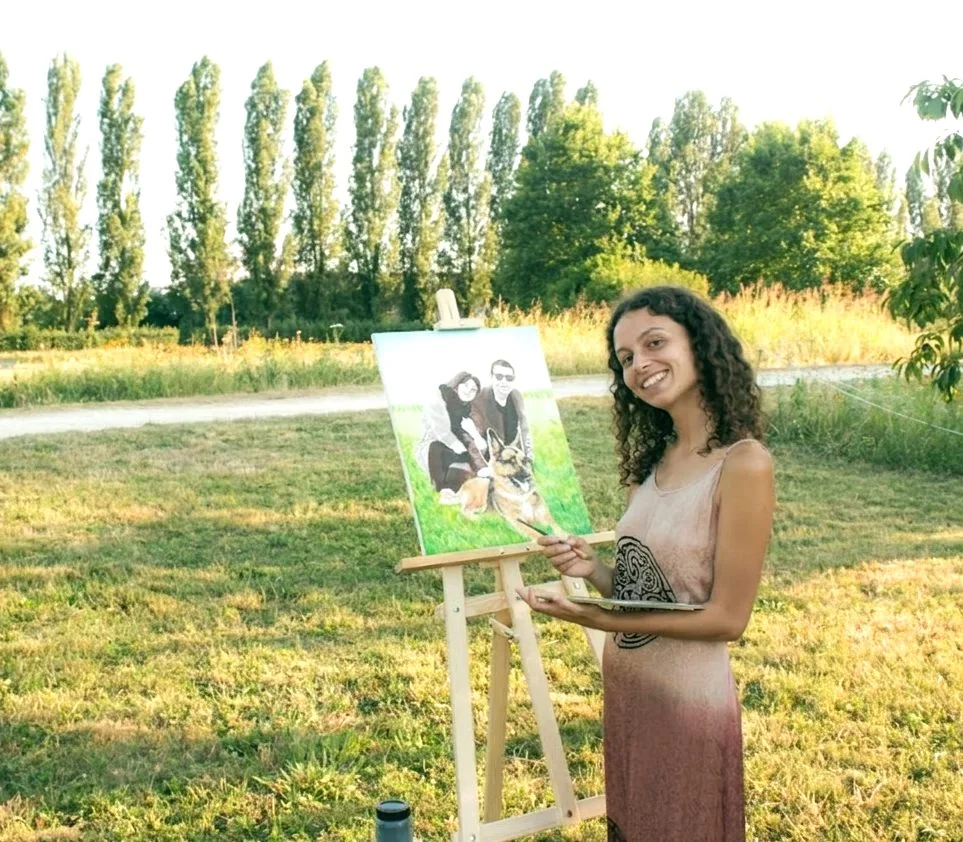

Murals
Paintings
Logos
Drawings
Live painting
Press
Press articles and publications featuring Giulia’s artistic work.
Artuu
A Milan un murales dedicato a Gaber e Jannacci. Intervista all’artista e alla figlia del cantautore
Read the article DomusUna nebbia diversa
Read the article Corriere della SeraMilan: il gigantesco murales sui due giganti Gaber e Jannacci è uno spettacolo
Read the article Sky ArteGiorgio Gaber ed Enzo Jannacci “insieme” in un nuovo murale
Read the article La RepubblicaUn murale per Giorgio Gaber ed Enzo Jannacci
Read the article Il GiornoGiorgio Gaber ed Enzo Jannacci, Milan li omaggia con un murales
Read the article Giornale di SegrateUn murales per Gaber e Jannacci: la firma è di un’artista segratese
Read the article Noi Zona 2Un nuovo murale dedicato a Gaber e Jannacci
Read the article iO DonnaMilan omaggia Giorgio Gaber e Enzo Jannacci con un murales
Read the article AskanewsGaber e Jannacci “insieme” a Milan in un grande murales
Read the article DomusCome abbiamo abitato in quarantena: un diario
Read the article BiennoloCartoline “Paesaggi inimmaginabili”
Read the article RockolFestival Gaber: al via da Camaiore la quattordicesima edizione
Read the article Lyra Teatro23-25 Settembre – Eccoci con Play Green, alla Fabbrica del Vapore!
Read the article Comune di SegrateIo sono Segrate, torna per due weekend consecutivi la Festa della Città
Read the articleBrera, Milan, and related pages
Useful pages to discover Giulia, her travel area, press coverage, and the Gaber and Jannacci mural.


Murals for homes, hotels, boutiques, and restaurants
A simple selection to see Giulia’s work first.